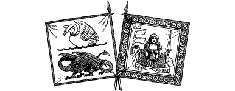

308
Since the first rays of dawn light brightened the eastern sky, the streets of Luomi echoed to the shouts of sergeants and the crunch of booted feet. The regiments of Lencia and Eru are taking their places in the column of march, and by mid-morning this column, 6500 strong, is ready to leave for battle. Company by company, through the city’s east gate, they depart, tramping the dusty road that leads to Cetza. When the time comes for you to join them you take your place with Prince Graygor’s escort and fall in line behind the armoured knights of the Palace Guard.
{kind=link}

The army is well protected by Lencian horse scouts before, behind, and on both sides, to make sure it is not ambushed whilst crossing the twenty miles of open grasslands to Cetza. During the afternoon a troop of scouts are sent ahead to spy on the enemy. They return to report that Baron Shinzar has fortified the town and received reinforcements from Blackshroud since his defeat at Luomi. The news does not cheer Prince Graygor, for he knows the ground around Cetza does not favour the attacker.
It is dusk when the army arrives on the outskirts of the town. In the gloom you can see the enemy campfires flickering between the ruins of cottages that were destroyed when the Drakkarim first invaded this land. Occasionally their gruff voices can be heard on the chill evening wind as they shout orders and call the names of slaves and attendants. After a whole tiring day’s marching, and with night drawing close, the order goes round that there will be no battle offensive this evening. Quickly the regiments disperse and many fires are lit. Tents are erected for the knights and the baggage carts are unloaded to provide the men with stores that should make their night in the open less uncomfortable. The Prince chooses to position his headquarters on a hill to the north that overlooks the town, and King Sarnac of Lencia chooses a similar position on a hill beyond the road, half a mile to the south. Shortly after the tents are constructed, a message arrives from King Sarnac’s headquarters, inviting the Prince to join him and draw up plans for tomorrow’s battle. The Prince accepts the invitation and says that you may accompany him if you wish.
If you wish to accompany the Prince to King Sarnac’s headquarters, turn to 244.
If you choose to decline the invitation, turn to 90.